The Resources panel lets you inspect your application's local data sources, including IndexedDB or Web SQL databases, local and session storage, cookies, and Application Cache resources. You can also quickly inspect your application's visual resources, including images, fonts and and style sheets.
The Resources panel reveals your application's local data stores, including IndexedDB and WebSQL databases, local and session storage, cookies and Application Cache resources.
IndexedDB
You can inspect IndexedDB databases and object stores, page through an object store's records, and clear an object store of its records.
- To view a list of available database, expand the IndexedDB category.
- To view a database's object stores, select it from the list of available databases.
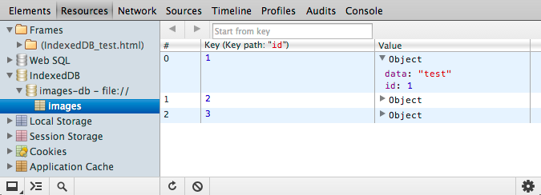
To page through records in the object store, click the Previous and Next page buttons. You can also specify the record where paging starts by specifying the record's key.
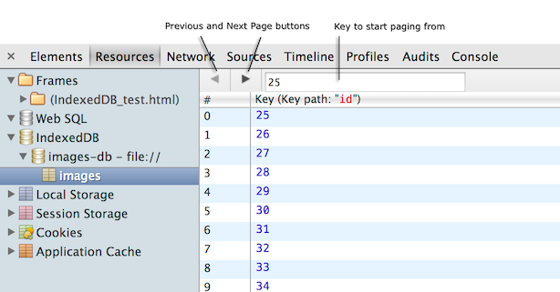
To clear the object store, do one of the following:
- Click the Clear object store button at the bottom of the panel.
- Right-click or Control-click the object store and select Clear from the context menu.
To view properties of a database, select it from the list of databases.
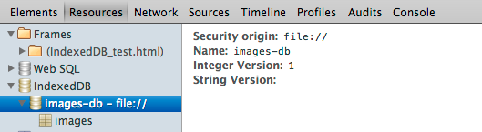
Web SQL
You can inspect the content of Web SQL databases, and run SQL commands against their contents.
- To view the available Web SQL databases, expand the Web SQL item in the tree control.
- To view available tables in a database, expand the database tree item.
- To view a table's records, select the table. It's properties appear in the right-hand pane.
- To refresh the view of the database, click the Refresh button at the bottom of the panel.
You can query a Web SQL database's tables with SQL commands and view query results in a tabular format. As you type out a command or table name, code hints are provided for the names of supported SQL commands and clauses, and the names of tables that the database contains.
To run a SQL command against a database:
- Select the database containing the table you want to query.
- At the prompt that appears in the right-hand panel, enter the SQL statement you want to execute.
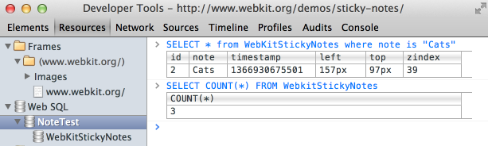
Cookies
You can view detailed information about cookies that have been created by an HTTP header or with JavaScript. You can also clear individual cookies, groups of cookies from the same origin, or clear all cookies from a specific domain.
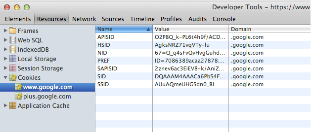
When you expand the Cookies category, it displays a list of domains of the main document and those of all loaded frames. Selecting one of these "frame groups" displays all cookies, for all resources, for all frames in that group. There are two consequences of this grouping to be aware of:
- Cookies from different domains may appear in the same frame group.
- The same cookie may appear in several frame groups.
The following fields are displayed for each cookie in the selected frame group:
- Name — The cookie's name.
- Value — The cookie's value.
- Domain — The domain that the cookie applies to.
-
Path — The path that the cookie applies to.
- Expires / Maximum Age— The cookie's expiration time, or maximum age. For session cookies, this field is always "Session".
- Size — The size of the cookie's data in bytes.
- HTTP — If present, indicates that cookies should be used only over HTTP, and JavaScript modification is not allowed.
- Secure — If present, indicates that communication for this cookie must be over an encrypted transmission.
You can clear (delete) a single cookies, all cookies in the selected frame group, or cookies from a specific domain. Recall the same cookie may appear in more than one frame group, as discussed previously. If the same cookie for a given domain is referenced in two frame groups, deleting all cookies for that domain will affect both groups.
To clear a single cookie, do one of the following:
- Select a cookie in the table and click the Delete button at the bottom of the panel.
- Right-click on a cookie and select Delete.
To clear all cookies from the selected frame group, do one of the following:
- Click the Clear button at the bottom of the Resources panel.
- Right-click on the frame group and select Clear from the context menu.
- Right-click on a cookie row in the table and select Clear All.
To clear all cookies from a specific domain:
- Right+click (or Ctrl+click) a cookie in the table from the target domain.
- From the context menu, seect Clear All from domain, where domain is the target domain.
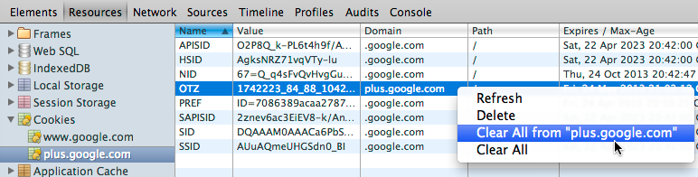
Note the following about this operation:
- Only cookies with exactly the same domain name are removed; sub- and top-level domains are unaffected.
- It only works on domains visible in the cookies table.
You can also refresh the table to reflect any changes to the page's cookies.
To refresh the cookies table, click the refresh button at the bottom of the Resources panel.
Application Cache
You can examine resources that Chrome has cached according to the Application Cache manifest file specified by the current document. You can view the current status of the Application Cache (idle or downloading, for
example), and the browser's connection status (online or offline).
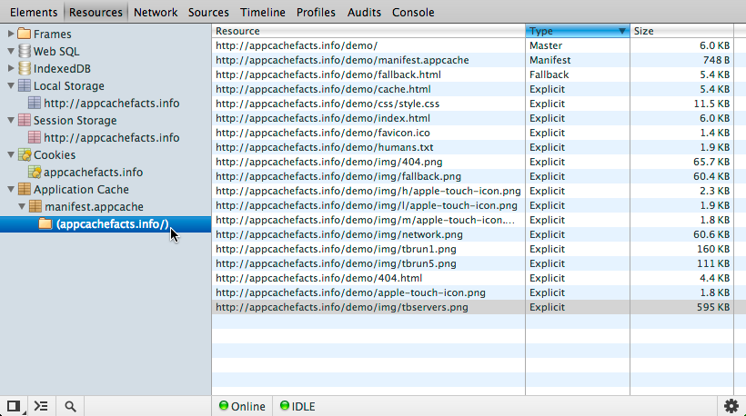
The table of cached resources includes the following properties for each resource:
- Resource — The URL of the resource.
-
Type — The type of cached resource, which can have one of the following
values:
- Master — The resource was added to the cache because it's manifest attribute indicated that this was its cache.
- Explicit — The resource was explicitly listed in the application's cache manifest file.
- Network — The resources was listed in the application's cache manifest file as a network entry.
- Fallback — The resource was specified as a fallback if a resource is inaccessible.
- Size — Size of the cached resource.
The Resources panel displays the current status of the application cache along with a colored status icon (green, yellow, or red). The following are the possible status values and their descriptions:
| Status | Description |
| IDLE | The application cache is idle. |
| CHECKING | The manifest is being fetched and checked for updates. |
| DOWNLOADING | Resources are being downloaded to be added to the cache, due to a changed resource manifest. |
| UPDATEREADY | There is a new version of the application cache available. |
| OBSOLETE | The application cache group is obsolete. |
Local and session storage
You can view and edit local and session storage key/value pairs you've created using the Web Storage APIs. You can edit, delete, and create both local and session storage data.
To delete a key/value pair, do one of the following:
- Select the item in the data table and do one of the following:
- Click the Delete button.
- Press the Delete key on your keyboard.
- Right-click or Control-click on the data item and choose Delete from the context menu.
To add a new key/value pair:
- Double-click inside an empty Key table cell and enter the key name.
- Double-click inside the corresponding Value table cell and enter the key's value.
To edit an existing key/value pair, do one of the following:
- Double-click in the cell you want to edit.
- Right-click or Control-click the cell you want to edit and choose Edit from the context menu.
To refresh the table with new storage data, click the Refresh button at the bottom of the panel.
Inspecting page resources
You can view all of your main document's resources, including images, scripts, and fonts, and those of any loaded frames. The top level category of page resources are the document's frames, which includes the main document, and its embedded frames.
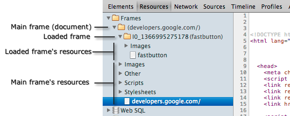
You can expand a frame to view its resources organized by type, expand a type to view all resources of that type, and select a resource to preview it in the panel on the right. Below is a preview of a font resource.
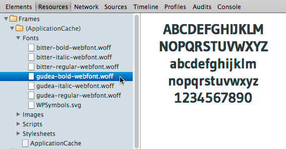
Image previews include the dimensions, file size, MIME type, and URL of the image.
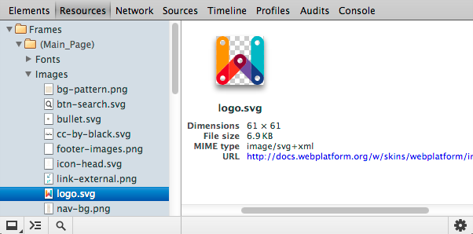
Other tips:
- To open a resource in the Network panel, right-click or control-click the resource and select Reveal In Resources Panel. From the same menu you can copy the resource's URL to the system clipboard, or open it in a new browser tab.
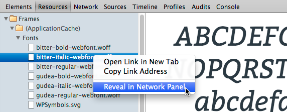
- To view the bounding box of an embedded frame, hover your mouse over a frame in the Resources panel:
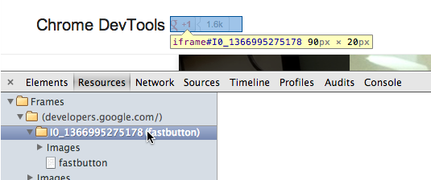